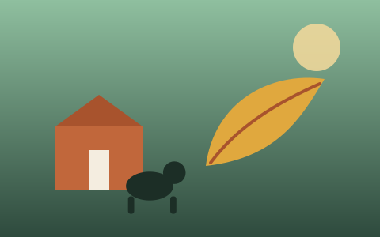

Why We Rotate Fourteen Paddocks
Rotational grazing is more work than letting the herd roam one field all season — but it's the single biggest reason our pasture, and our goats, stay healthy year after year. Here's how we plan the rotation, what we watch for, and what we'd do differently if we started over.
Read Full Article